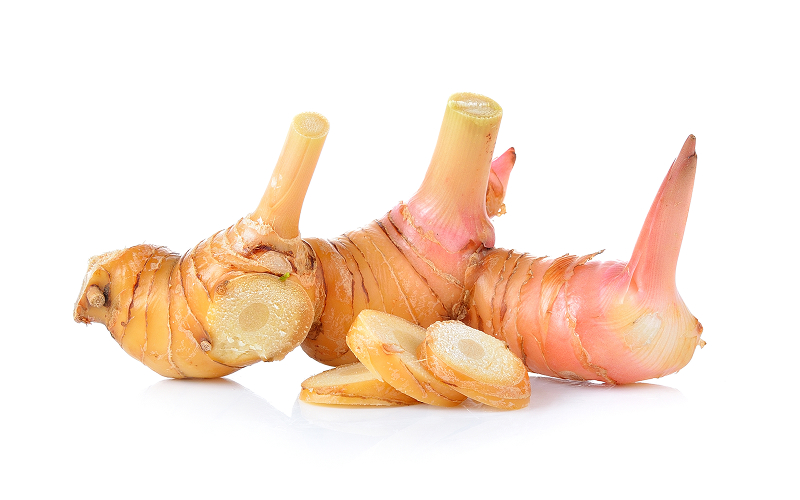
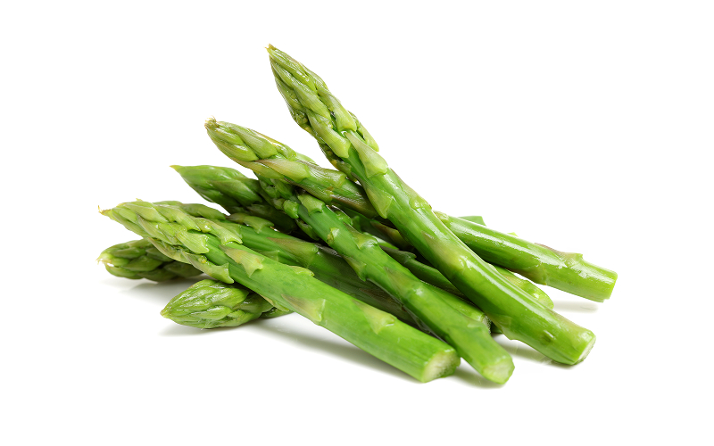
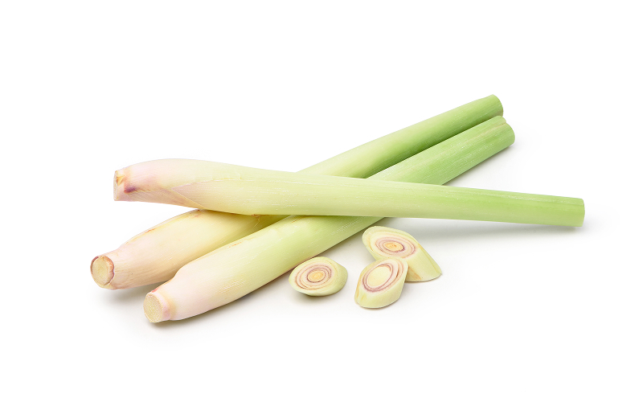
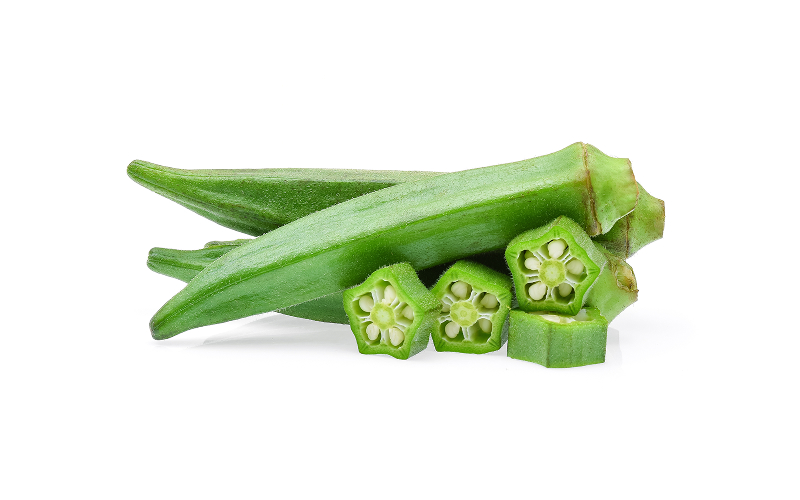

Green Papaya
Crisp and firm with a mild, slightly sweet flavor. A key ingredient in Thai Green Papaya Salad (Som Tam) and stir-fries.
Products
Carefully cultivated to deliver the food safety, consistency, and quality trusted by importers worldwide.
Crisp and firm with a mild, slightly sweet flavor. A key ingredient in Thai Green Papaya Salad (Som Tam) and stir-fries.

Fresh, aromatic, and mildly sweet with a satisfying crunch. Commonly used as a garnish or ingredient in stir-fries, soups, and omelets.

Distinctive aroma with a subtle sweet-bitter balance. A favorite filling for Chinese Chive Dumplings and stir-fried dishes.

Bold, zesty aroma with a mild spicy kick. Essential in Tom Yum Soup, Tom Kha Gai (Chicken in Galangal Soup), and Thai curry pastes.

Slightly bitter-sweet with a crisp pop texture. Widely used in Thai Green Curry and spicy chili pastes (nam prik).

Sweet, juicy, and delicately crisp. Popular in stir-fries with oyster sauce, salads, and as a side vegetable.

Fresh, citrusy aroma with a light sweet-sour taste. A core ingredient in Tom Yum Soup, herbal teas, and Thai curry pastes.

Crisp outside, tender inside, with a mild sweetness. Enjoyed in Southern Thai curries, spicy dips, or simply steamed with chili dip (nam prik).

Sweet, crunchy, and juicy. A common addition to stir-fries, soups, and vegetable salads.

Fiery heat with a bold aroma. A staple in curry pastes, stir-fries, and dipping sauces across Thai cuisine.
Consistent quality, from farm to shipment.
We work with a curated network of trusted growers across Thailand's leading agricultural regions, applying strict selection criteria at every stage — so every shipment reflects the same standard our buyers count on, order after order.
Our commitment to every shipment:
We partner exclusively with GAP-certified farms that meet our criteria for growing practices, hygiene, and consistency — ensuring every product entering our supply chain starts at a high standard.
Every batch is tested against EU MRL (Maximum Residue Limits) requirements, giving international buyers confidence that pesticide residue levels meet strict European food safety standards.
From harvest to packing, our team inspects and grades each batch for maturity, freshness, and appearance — then moves it through a temperature-controlled process to preserve quality in transit.
Our GHP-compliant facilities and documented sourcing process mean every order can be traced back to its origin — giving buyers transparency and confidence in what they receive.